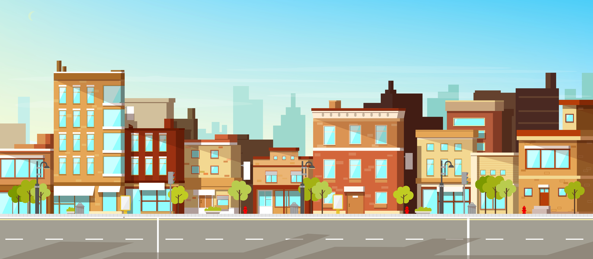
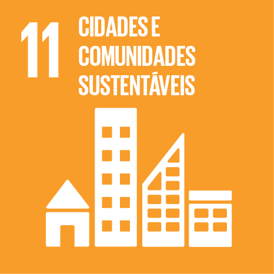
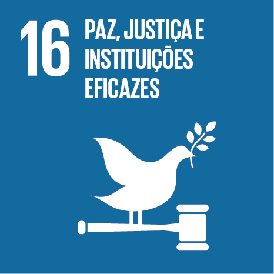

O Problema
Quantos problemas passam despercebidos na sua rua?
Nas cidades, problemas urbanos como buracos nas ruas, alagamentos, calçadas danificadas e falta de manutenção fazem parte da realidade de muitos moradores. Apesar de afetarem diretamente a mobilidade, a segurança e a qualidade de vida da população, muitas dessas situações acabam passando despercebidas ou não recebem a atenção necessária.
Além disso, a falta de organização e visibilidade dessas ocorrências dificulta a compreensão das necessidades de cada região. O Ponto a Ponto surge para enfrentar esse desafio, oferecendo um espaço onde os cidadãos podem registrar problemas locais e dar visibilidade a eles. Assim, a participação coletiva ajuda a transformar relatos isolados em informações organizadas sobre a realidade das comunidades.


Nossa Tecnologia
1. O Radar
O mapa funciona como um radar de problemas urbanos, permitindo visualizar as ocorrências registradas pelos moradores em diferentes regiões. Por meio de marcadores e informações organizadas, é possível identificar onde os problemas estão concentrados, acompanhar sua recorrência e compreender melhor as necessidades de cada comunidade.

2. A Contribuição
A contribuição acontece por meio de um formulário simples e acessível, no qual os cidadãos podem registrar problemas encontrados em sua região. Ao informar detalhes como categoria, localização e descrição da ocorrência, cada pessoa ajuda a construir uma base coletiva de informações, aumentando a visibilidade dos desafios urbanos e fortalecendo a participação da comunidade.

Nossos Objetivos
Nosso objetivo é construir cidades mais participativas, onde cada cidadão tenha voz ativa na identificação dos problemas de sua região. Acreditamos que, por meio da colaboração e do compartilhamento de informações, podemos dar mais visibilidade às necessidades da comunidade e incentivar a construção de espaços urbanos mais organizados, inclusivos e conscientes.


A ODS 11, estabelecida pela ONU, busca tornar as cidades e comunidades mais inclusivas, seguras, resilientes e sustentáveis. Seu objetivo envolve melhorar a qualidade de vida urbana, promover o planejamento das cidades e incentivar a participação da população na construção de espaços melhores.
O Ponto a Ponto se conecta a esse objetivo ao incentivar os moradores a identificar e registrar problemas urbanos de suas regiões. Dessa forma, a plataforma organiza informações locais e amplia a visibilidade das necessidades da comunidade, contribuindo para uma participação cidadã mais ativa.
A ODS 16 busca promover sociedades pacíficas e inclusivas, garantir o acesso à justiça e desenvolver instituições eficazes, responsáveis e transparentes. Entre seus propósitos está fortalecer a participação social e ampliar a transparência nas decisões.
O projeto contribui para esse objetivo ao aproximar os cidadãos das questões que afetam seu cotidiano, oferecendo uma forma organizada de compartilhar informações sobre os problemas locais. Assim, buscamos incentivar o diálogo entre comunidade e responsáveis pela gestão urbana.

Nosso Público

Cidadãos e Moradores
Pessoas que conhecem sua região, identificam problemas e desejam participar da construção de uma comunidade melhor.

Gestores e Responsáveis
Pessoas e equipes que podem utilizar informações organizadas para compreender as necessidades do escritório.
Nossos Benefícios
Visibilidade Social
Problemas que antes passavam despercebidos ganham espaço e atenção.
Força Coletiva
A participação de diferentes moradores amplia a compreensão das necessidades locais.
Informação Organizada
Registros transformados em dados mais fáceis de visualizar e compreender.
Priorização Inteligente
Gravidade e recorrência ajudam a destacar situações que merecem atenção